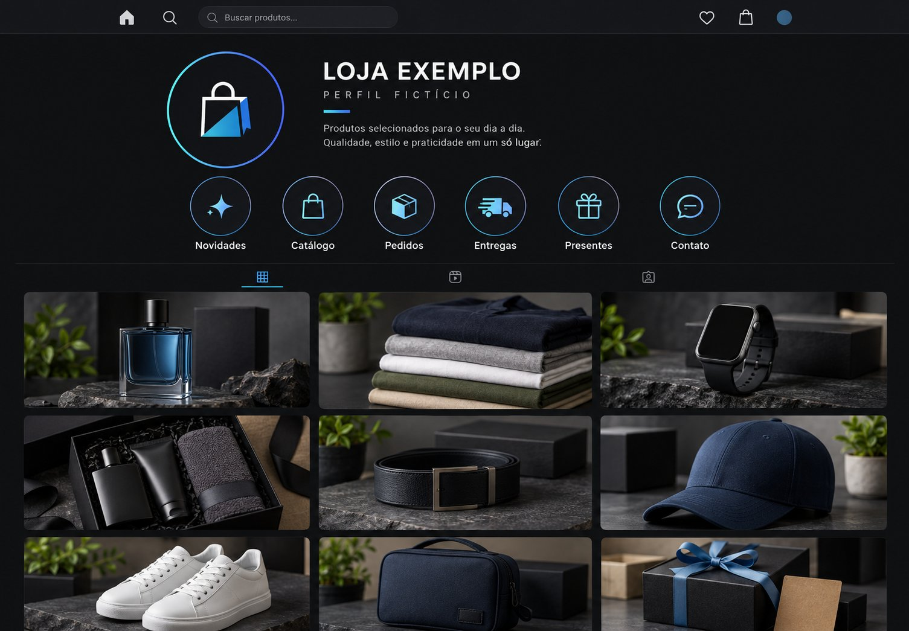

Catálogo
EspalhadoFotos, preços e disponibilidade divididos entre Stories, destaques e conversas.
Antes de falar em sistema
Você divulga os produtos, responde clientes e fecha vendas. Mas, sem conectar catálogo, pedidos e registros, cada venda traz uma nova informação que pode se perder entre as mensagens — e você precisa procurar e acompanhar tudo por conta própria.
O problema não é divulgar. É não ter um lugar com todos os seus produtos para apresentar nem para organizar o que acontece depois.
Veja como organizar essa rotinaFotos, preços e disponibilidade divididos entre Stories, destaques e conversas.
Pago, pendente, entregue ou retirada? O andamento acaba dependendo da memória e das mensagens.
Sem um registro único, fica difícil conferir o que foi vendido e como o mês está andando.
Plataforma para o seu negócio!
Divulgue onde seu público já está. Depois, ofereça um catálogo próprio para encontrar produtos e um sistema para acompanhar pedidos, registrar vendas no PDV e consultar o mês.
Conversar sobre a sua futura plataformaA GM Perfumaria é uma loja fictícia usada para demonstrar a solução. As sete telas são capturas do projeto em funcionamento com dados de demonstração.
Da divulgação à decisão
Uma novidade nos Stories desperta interesse. Mas, quando o cliente precisa procurar o produto entre publicações ou Destaques, isso vira uma grande dor de cabeça.
Com um catálogo próprio, ele escolhe com mais clareza e pode pesquisar os produtos. Você acompanha o pedido e registra a venda no mesmo fluxo.

Bom para despertar interesse. Difícil de consultar depois.
Preços, busca e opções reunidos para escolher.
Solução em ação
Acompanhe o caminho do comprador e depois o seu lado da operação. A demonstração usa uma loja fictícia e capturas reais do projeto em funcionamento.
Uma vitrine própria para explorar itens, buscar por nome e navegar por categorias.
O cliente seleciona os itens e confere o resumo antes de continuar.
O sistema prepara a mensagem. O cliente abre a conversa e precisa tocar em Enviar.
No painel, você consulta o pedido e acompanha cada etapa da operação.
Abra o pedido no PDV, confira o pagamento e registre a venda. As vendas presenciais também podem ser registradas.
Veja os registros de vendas e a origem online ou presencial no relatório mensal.
O que você vai receber
Produtos, preços e busca em um lugar fixo.
Um painel para acompanhar o andamento.
Registro de vendas online e presenciais.
Visão mensal dos registros por origem.
Crie códigos com valor, pedido mínimo e validade para suas campanhas.
Defina quem pode cadastrar produtos, criar cupons e usar as funções administrativas.
Feito para a sua realidade
Antes de falar em ferramentas, quero entender a sua rotina: o que você vende, como recebe os pedidos e onde costuma perder tempo. A partir daí, conversamos sobre uma página com a identidade do seu negócio e sobre como adaptar o sistema ao que você precisa.
É o seu site, do seu jeito, para o seu cliente!

Quem está por trás
Sou Willy Fernandes. Trabalhei por seis anos com vendas e sei como é tentar mostrar todos os produtos, responder clientes e ainda lembrar o que foi pedido, pago ou entregue. Senti falta de um catálogo que o cliente pudesse consultar, conhecer e pedir quando quisesse, além de um jeito mais simples de registrar as vendas.
Por isso, criei a WFSystems para ajudar pequenos negócios a apresentar seus produtos em um espaço próprio e a organizar a rotina de vendas. Quero começar entendendo como você trabalha, porque uma ferramenta só faz sentido quando resolve o seu problema de verdade.
Entenda melhor
Uma página-catálogo com a identidade do seu negócio e acesso ao sistema para acompanhar pedidos, registrar vendas no PDV e consultar o relatório mensal. O escopo da adaptação é definido na conversa inicial.
Sim. O PDV permite registrar vendas presenciais e também vendas iniciadas por pedidos online. Ele registra a venda; não processa pagamento automaticamente.
O comprador escolhe os itens e o sistema prepara uma mensagem com o resumo. A conversa é aberta.
O relatório mensal reúne os registros de vendas e permite consultar a origem online ou presencial.
Os acessos podem ser definidos de acordo com a responsabilidade de cada pessoa. Na configuração do projeto, funções administrativas — como cadastrar produtos e criar cupons — podem ficar disponíveis somente para o proprietário ou para funcionários autorizados por ele.
Vamos conversar
Responda a algumas perguntas rápidas. Ao final, confira o resumo; depois, você será direcionado ao WhatsApp para falar com nosso atendente.